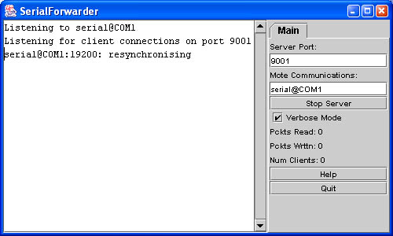
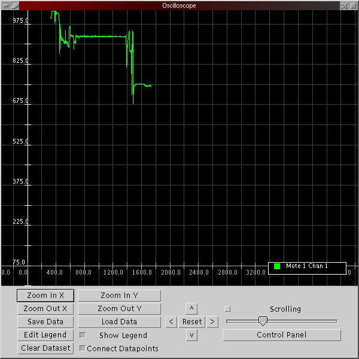
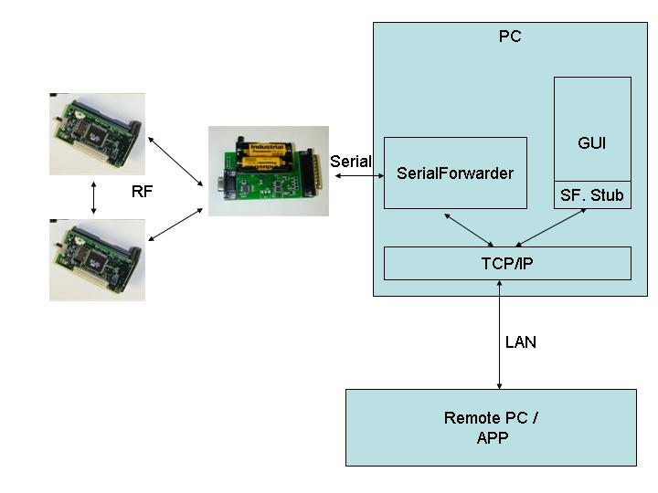

| Lesson 6: Displaying Data on a PC
Last updated 23 September 2003 |
To goal of this lesson is to integrate the sensor network with a PC,
allowing us to display sensor readings on the PC as well as to
communicate from the PC back to the motes. First, we'll introduce the
basic tools used to read sensor network data on a desktop over the
serial port. Next we'll demonstrate a Java application that displays
sensor readings graphically. Finally, we'll close the communication
loop
by showing how to send data back to the motes.
The mote application we use in this lesson is found in apps/Oscilloscope. It consists of a single module that reads data from the photo sensor. For each 10 sensor readings, the module sends a packet to the serial port containing those readings. The mote only sends the packets over the serial port. (To see how the data can be sent over the radio see apps/OscilloscopeRF.)
Compile and install the Oscilloscope application on a mote. You will need to connect a sensor board to the mote to get the light readings. Remember to set the SENSORBOARD option in apps/Oscilloscope/Makefile to either micasb or basicsb depending on the type of sensor board you have.
This application requires that the mote with the sensor be connected to the serial port on the programming board. Note that the size of the current Mica sensor board prevents you from plugging the mote and board into the programming board directly. One workaround is to use a short cable to connect the programming board to the sensor board connector.
When the Oscilloscope application is running, the red LED
lights when the sensor reading is over some threshold (set to 0x0300)
by default in the code - you might want to change this to a higher
value
if it never seems to go off in the dark). The yellow LED is toggled
whenever a packet is sent to the serial port.
The first step to establishing communication between the PC and the mote is to connect up your serial port cable to the programming board, and to make sure that you have Java and the javax.comm package installed. After programming your mote with the Oscilloscope code, cd to the tools/java directory, and type
make
export MOTECOM=serial@serialport:baudrateThe environment variable MOTECOM tells the java Listen tool (and most other tools too) which packets it should listen to. Here serial@serialport:baudrate says to listen to a mote connected to a serial port, where serialportis the serial port that you have connected the programming board to, and baudrate is the specific baudrate of the mote. For the mica and mica2dot motes, the baud rate is 19200, for the mica2 it is 57600 baud. You can also use a mote name as the baudrate (in which case that motes baudrate is selected). So you could do any of:
export MOTECOM=serial@COM1:19200 # mica baud rateSet MOTECOM appropriately, then run
export MOTECOM=serial@COM1:mica # mica baud rate, again
export MOTECOM=serial@COM2:mica2 # the mica2 baud rate, on a different serial port
export MOTECOM=serial@COM3:57600 # explicit mica2 baud rate
java net.tinyos.tools.ListenYou should see some output resembling the following:
% java net.tinyos.tools.Listen
serial@COM1:19200: resynchronisingThe program is simply printing the raw data of each packet received from the serial port.
7e 00 0a 7d 1a 01 00 0a 00 01 00 46 03 8e 03 96 03 96 03 96 03 97 03 97 03 97 03 97 03 97 03
7e 00 0a 7d 1a 01 00 14 00 01 00 96 03 97 03 97 03 98 03 97 03 96 03 97 03 96 03 96 03 96 03
7e 00 0a 7d 1a 01 00 1e 00 01 00 98 03 98 03 96 03 97 03 97 03 98 03 96 03 97 03 97 03 97 03
Before continuning, execute unset MOTECOM to avoid forcing all java applications to use the serial port to get packets.
If you don't have the javax.comm package installed
properly, then the program will complain that it can't find the serial
port. If you do not see that data lines on the screen, you may have
chosen the wrong COM port or the mote may not be correctly connected to
the computer.
The application that you are running is simply printing out the packets that are coming from the mote. Each data packet that comes out of the mote contains several fields of data. Some of these fields are generic Active Message fields, and are defined in tos/types/AM.h. The data payload of the message, which is defined by the application, is defined in apps/Oscilloscope/OscopeMsg.h. The overall message format for the Oscilloscope application is as follows:
| dest addr | handlerID | groupID | msg len | source addr | counter | channel | readings | |
| 7e 00 | 0a | 7d | 1a | 01 00 | 14 00 | 01 00 | 96 03 97 03 97 03 98 03 97 03 96 03 97 03 96 03 96 03 96 03 |
Note that the data is sent by the mote in little-endian format; so, for example, the two bytes 96 03 represent a single sensor reading with most-significant-byte 0x03 and least-significant-byte 0x96. That is, 0x0396 or 918 decimal.
Here is an excerpt from OscilloscopeM.nc showing the data being written to the packet:
OscilloscopeM.nc
async event result_t ADC.dataReady(uint16_t data) {
task void dataTask() {
|
The Listen program is the most basic way of communicating with the mote; it directly opens the serial port and just dumps packets to the screen. Obviously it is not easy to visualize the sensor data using this program. What we'd really like is a better way of retrieving and observing data coming from the sensor network.
The SerialForwarder program is used to read packet data from a serial port and forward it over an Internet connection, so that other programs can be written to communicate with the sensor network over the Internet. To run the serial forwarder, cd to tools/java and run the program
java net.tinyos.sf.SerialForwarder -comm serial@COM1:<baud rate>This will open up a GUI window that looks similar to the following:

The -comm argument tells SerialForwarder to communicate over serial port COM1. The-comm argument specifies where the packets SerialForwarder should forward come from, using the same syntax as the MOTECOM environment variable you saw above (you can run 'java net.tinyos.packet.BuildSource' to get a list of valid sources). Unlike most other programs, SerialForwarder does not pay attention to the MOTECOM environment variable; you must use the -comm argument to specify the packet source (The rationale is that you would typically set MOTECOM to specify a serial forwarder, and that serial forwader should talk to, e.g., a serial port. You wouldn't want the SerialForwarder to talk to itself...).
The <baud rate> argument tells SerialForwarder to communicate at specified baud rate.
SerialForwarder does not display the packet data itself, but rather updates the packet counters in the lower-right hand corner of the window. Once running, the serial forwarder listens for network client connections on a given TCP port (9001 is the default), and simply forwards TinyOS messages from the serial port to the network client connection, and vice versa. Note that multiple applications can connect to the serial forwarder at once, and all of them will receive a copy of the messages from the sensor network.
More information is available on SerialForwarder and packet
sources is found in the
SerialForwarder Documentation
| Starting the Oscilloscope GUI |
It is now time to graphically display the data coming from the motes. Leaving the serial forwarder running, execute the command
java net.tinyos.oscope.oscilloscopeThis will pop up a window containing a graphical display of the sensor readings from the mote (If you get an error like "port COM1 busy", you probably forgot to unset the MOTECOM environment variable at the end of the Listen example. Do that now). It connects to the serial forwarder over the network and retrieves packet data, parses the sensor readings from each packet, and draws it on the graph:

The x-axis of the graph is the packet counter number and the
y-axis
is the sensor light reading. If the mote has been running for a while,
its packet counter might be quite large, so the readings might not
appear on the graph; just power-cycle the mote to reset its packet
counter to 0. If you don't see any light readings on the display, try
zooming out on the Y axis (the values might be out of the displayed
range) or selecting the "Scrolling" push button (the sample number may
be out of the displayed range, "Scrolling" automatically scrolls to the
most recent values).
| Using MIG to communicate with motes |
MIG (Message Interface Generator) is a tool that is used to automatically generate Java classes that correspond to Active Message types that you use in your mote applications. MIG reads in the nesC struct definitions for message types in your mote application and generates a Java class for each message type that takes care of the gritty details of packing and unpacking fields in the message's byte format. Using MIG saves you from the trouble of parsing message formats in your Java application.
MIG is used in conjunction with the net.tinyos.message package, which provides a number of routines for sending and receiving messages through the MIG-generated message classes. NCG(nesC Constant Generator) is a tool to extract constants from nesC files for use with other applications and is typically used in conjunction with MIG.
Let's look at the code from tools/java/net/tinyos/oscope/GraphPanel.java (part of the oscilloscope program) that communicates with the serial forwarder. First, the program connects to the serial forwarder and registers a handler to be invoked when a packet arrives. All of this is done through the net.tinyos.message.MoteIF interface:
GraphPanel.java
// OK, connect to the serial forwarder and start receiving data |
MoteIF represents a Java interface for sending and receiving messages to and from motes. The host and port number of the serial forwarder are obtained from the environment variable MOTECOM. You initialize MoteIF with PrintStreamMessenger which indicates where to send status messages (System.err), as well as an (optional) Active Message group ID. This group ID must correspond to the group ID used by your motes.
We register a message listener (this) for the message type OscopeMsg.OscopeMsg is automatically generated by MIG from the nesC definition for struct OscopeMsg, which we saw earlier in OscopeMsg.h. Look at tools/java/net/tinyos/oscope/Makefile for an example of how this class is generated. You will see:
OscopeMsg.java:Essentially, this generates OscopeMsg.java from the message type struct OscopeMsg in the header file apps/Oscilloscope/OscopeMsg.h.
$(MIG) -java-classname=$(PACKAGE).OscopeMsg $(APP)/OscopeMsg.h OscopeMsg -o $@
GraphPanel implements the MessageListener interface, which defines the interface for receiving messages from the serial forwarder. Each time a message of the appropriate type is received, the messageReceived() method is invoked in GraphPanel. It looks like this:
GraphPanel.java
public void messageReceived(int dest_addr, Message msg) {
|
messageReceived() is called with two arguments: the destination address of the packet, and the message itself (net.tinyos.message.Message).Message is just the base class for the application-defined message types; in this case we want to cast it to OscopeMsg which represents the actual message format we are using here.
Once we have the OscopeMsg we can extract fields from it using the handy get_sourceMoteID(), get_lastSampleNumber(), and get_channel() methods. If we look at struct OscopeMsg in OscopeMsg.h we'll see that each of these methods corresponds to a field in the message type:
OscopeMsg.h
struct OscopeMsg |
Each field in a MIG-generated class has at least eight methods associated with it:
The remainder of messageReceived() pulls the sensor readings out of the message and places them on the graph.
| Sending a message through MIG |
It is also possible to send a message to the motes using MIG. The Oscilloscope application sends messages of type AM_OSCOPERESETMSG, which causes the mote to reset its packet counter. Looking at clear_data() in GraphPanel.java, we see how messages are sent to the motes:
GraphPanel.java
try {
|
All we need to do is invoke MoteIF.send() with the
destination address and the message that we wish to send. Here, MoteIF.TOS_BCAST_ADDR
is used to represent the broadcast destination address, which is
identical to TOS_BCAST_ADDR used in the nesC code.
Transmit the light sensor readings over the radio to another mote that sends them over the serial port!
The apps/Oscilloscope mote application is written to use the serial port and the light sensor. Instead, look at apps/OscillosopeRF, which transmits the sensor readings over the radio. In order to use this application, you need to use one mote as a gateway that receives data packets over the radio and transmits them over the serial port. apps/TOSBase is an application that does this; it simply forwards packets between the radio and the UART (in both directions).
Extra Credit: Can you figure out how to display sensor readings on the oscilloscope GUI from two motes simultaneously? (Note that the oscillosope GUI is already capable of displaying sensor readings from multiple motes. You have to ensure that those readings are correctly transmitted and received over the network.) This setup would look like the following diagram.
